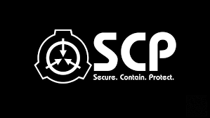
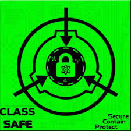
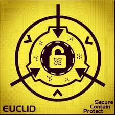
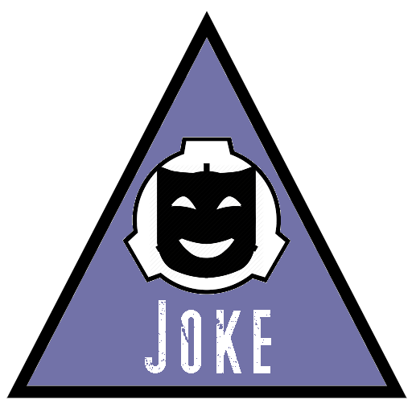

| Página creada por: Cristopher Alexander Flores Miranda, #Cuenta:32, 12 BTP "B"__________________________________________________________________________________Contactos |

SCP - Containment Breach es un juego de terror indie de supervivencia en primera persona desarrollado por Joonas Rikkonen. Se basa en la wiki de la Fundación SCP. El juego da comienzo con nuestro personaje, un sujeto de clase D conocido como D-9341. Los Sujetos de clase D son conejillos de indias que son por lo general personas condenadas a muerte, a las cuales se les da la opción de trabajar en la fundación por aproximadamente 1 mes, si estos sobreviven dicho período, todos sus crímenes son perdonados y pueden ser liberados. D-9341 es despertado y sacado de su celda para comenzar una prueba. Sin embargo, durante la prueba, la instalación comienza a funcionar mal, lo que provoca que se produzca una brecha de contención en todo el sitio.Página Oficial:https://www.scpcbgame.com
...
|  |
La Fundación SCP es una fundación ficticia que existe y opera de manera clandestina y secreta conteniendo anomalías para asegurar la normalidad y en ocasiones proteger a la humanidad, aunque sea necesario realizar acciones poco éticas.
- Seguridad
- Para evitar que las anomalías caigan en malas manos
- Contención
- Para que los efectos de las anomalías no crezcan en el mundo
- Protección
- A la humanidad de las anomalías, y a las anomalías de la humanidad
|
Entidades SCP del juego
A continuación se dará información de las entidades scp que se encuentran en el juego de SCP Contaiment Breach,estarán ordenados según su clase dada por la fundación más una breve explicación de estas mismas
Para ver a los SCP, de click en las imágenes
|  |
- Clase SAFE
- Los objetos Clase-Seguro son aquellas anomalías que son entendidas lo suficientemente bien como para contenerlas de forma confiable y permanente, o de otra manera, no activan sus efectos anómalos por si mismos o no intencionalmente (Que sean clasificados como Clase-Safe no significa que no puedan ser peligrosos).
|
|  |
- Clase EUCLID
- La Clasificación Euclid es asignado a los SCPs cuyo comportamiento no puede predecirse infaliblemente, ya sea porque el objeto es sensible, se comporta fuera del conocimiento científico actual, o su naturaleza es simplemente poco conocida en la actualidad.
|
 |
- Clase KETER
- Los Objetos Clase-Keter son anomalías que presentan una amenaza hostil para la seguridad del personal de La Fundación y el resto de la humanidad, o bien requieren de Procedimientos de Contención extensos y complejos para ser contenidos o que no pueden ser plenamente comprendidos por la tecnología y conocimiento actual de La Fundación.
Estas anomalías generalmente se consideran como las más peligrosas en la contención de La Fundación, y todos los esfuerzos de investigación están dirigidos a buscar maneras más confiables para contener tales anomalías, o, como último recurso, la neutralización o destrucción oportuna de sus efectos anómalos.
|
|  |
- Clase JOKE
- Estos son objetos que por lo general no son Canon en el lore de la fundación, son entidades que dan un alivio cómico entre tantas anomalías que pueden ser un peligro para la humanidad o la realidad misma.
|